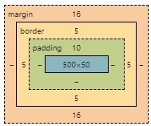

Estudando caixa box-level
Parágrafos e h1-h6 são exemplos de box-level.
Já os links são exemplos de caixas do tipo inline.
No Google Chrome é possível "inspecionar" a página e abrir o dev-tools, que mostra o modelo de caixa. Dentro dessa dev-tools você consegue personalizar as configurações padrão dos blocos do box-level:
A dev-tool não altera o arquivo original, mas pode ser útil para que você possa mexer nos box-level e encontrar as melhores configurações para então aplicá-las ao seu projeto. Funciona como uma preview do estilo na sua página.
Utilizando SHORTHAND
Ao configurar o padding é possível colocar as medidas em um único comando, sem especificar top, right, bottom, left. Porém, como todo shorthand, ele deve seguir sempre essa sequência.
Se os valores forem todos iguais, basta informar uma vez só.
IMPORTANTE! Se forem informados dois valores, o primeiro será aplicado para TOP e BOTTOM e o segundo para RIGHT e LEFT.